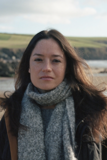

Members
Assistant Professor, UC Berkeley
Faculty Scientist, Lawrence Berkeley National Lab.
Research interests: Terrestrial ecosystems and global change; ecosystem ecology; biosphere-atmosphere interactions and feedbacks; plant traits; phenology and vegetation cover; model-data integration
Assistant Professor, UC Berkeley
Faculty Scientist, Lawrence Berkeley National Lab.
Research interests: Terrestrial ecosystems and global change; ecosystem ecology; biosphere-atmosphere interactions and feedbacks; plant traits; phenology and vegetation cover; model-data integration
Email: trevorkeenan@berkeley.edu
Telephone: 510-486-5537
Postdoctoral Researcher
Research interests: Remote sensing, global photosynthesis, terrestrial ecosystem models
PhD (2017), Physical Geography, University of Toronto, Canada
MSc (2013), Physical Geography, Peking University, China
BSc (2010), Environment and Resource Management (GIS & Remote sensing), Wuhan University, China
Email: xzluo@lbl.gov
Telephone: 510-384-6606

Postdoctoral Researcher
Research interests: Plant traits, spectral methods, tropical ecology
PhD (2016), Geography and the Environment, University of Oxford, UK
MSc (2006), Botanical Conservation, University of Plymouth, UK
BSc (2004), Ecology, University of Plymouth, UK
Email: cchb@lbl.gov
Telephone: 510-486-5537
Alumni
Masters student
Research interests: Data science, machine learning, environmental science
MSc (2016-) Applied Mathematics, ENSTA ParisTech, Paris, France
BSc (2016) Mathematics, Lycee Condorcet, France
Postdoctoral Researcher (currently faculty at Texas Tech)
Research interests: Ecosystem science, plant acclimation, photosynthetic theory, optimality
PhD (2016) Biological Sciences, Purdue University
BSc (2010) Ecology and Evolutionary Biology, Purdue Univeristy
Email: nick.smith@ttu.edu
Visiting Graduate Student
Research interests: Climate change, drought and optimal photosynthesis
PhD (2016-) Piao Group, Peking University, China
Email: mengtianhuang@pku.edu.cn
Graduate Student (currently a postdoc at UNSW)
Research interests: Interactions between vegetation, climate and water resources
PhD (2016) Biological Sciences, Macquarie University, Australia
BSc (2010) Geography, University of Bristol, UK
Email: a.ukkola@unsw.edu.au